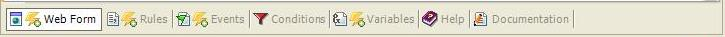
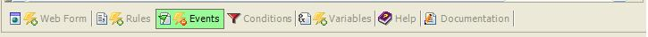
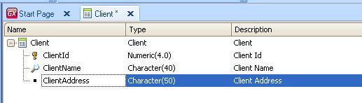
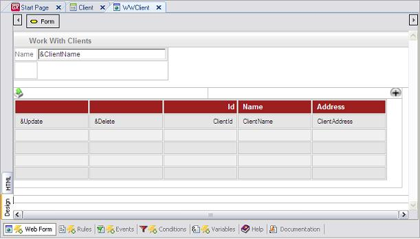
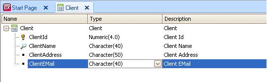
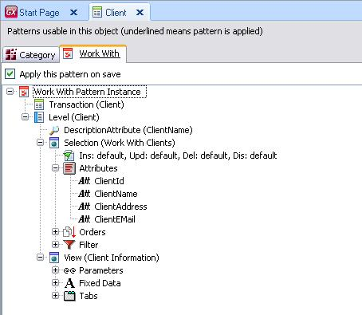
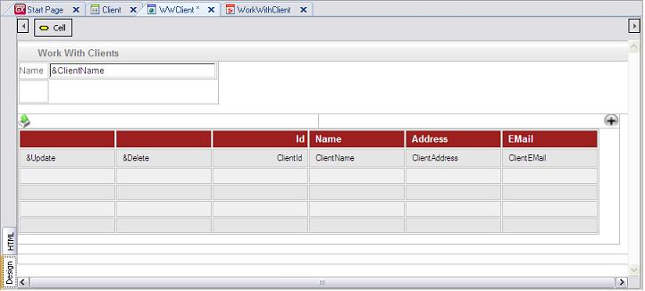

All objects generated by Patterns are created with default parts, meaning that every part (form, rules, events, variables) of every object is generated by default. This is represented by the following icons:  If you change some part of the object, the icon will change as well:  The implementation based on default parts provides dynamism between the transaction and the pattern. This means that when you change a property in the pattern definition, add a new filter in the instance or make a change in the Transaction, all objects generated by Patterns will automatically react to the change without the need to reapply the pattern. For example, the Work With Pattern implementation creates a set of empty objects with specific default templates set in each object. It creates a "WW<Transaction>" Web Panel with a default template that reads the transaction structure and creates a grid. Suppose you have a Client Transaction with the following attributes:  When you apply the Work With Pattern to this Transaction, you will obtain the following WWClient web panel:  Every time you add an attribute to the transaction structure, it will also be added in the transaction's instance and in the Work With web panel without the need to apply the pattern again. You only need to open the Work With web panel to see all the new attributes in the grid. In the example, if you add a ClientEMail attribute in the structure of Client Transaction:  When you save the Transaction, the attribute will be automatically added in the transaction's instance and in the Work With web panel. When you open the objects you can see the new attribute:   The dynamism between Transaction and Pattern remain for all the default parts of the objects. If you want to have default parts again, you can select the Edit option of the Menu; Apply Default (the part —Rules, Events, Conditions, etc.— where you have opened the object) or Apply Default (All parts) return all the parts that had been modified to default.
|
| Backlinks | ||
| Apply Default (for Win and Web Forms) | Apply Defaults Option (for Win and Web forms) | Toc:GeneXus - Table of contents |
| Category:Patterns |